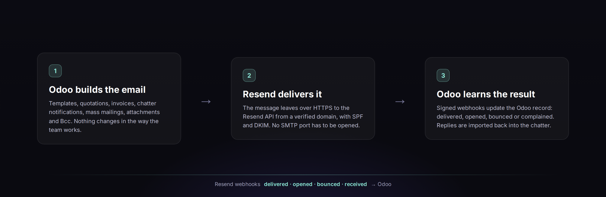

Odoo 19 & 20 · Community & Enterprise · Free
Email that leaves Odoo and comes back with an answer
Every Odoo email goes out through the Resend API, replies come back into the chatter, and each message keeps its delivery status on the record that sent it. Odoo builds emails exactly as before; only the transport changes.
HTTPS only, no SMTP port
Delivery status per message
Replies in the chatter
English · Українська · Русский
Resend > Emails
One list, every message
See what happened after sending. Each row carries the Resend message id, the recipients and the current status. The same status appears on the standard Odoo email and on the document the email was sent from.
A late event never moves a message backwards
Bounced, complained and failed keep the error
Split deliveries are tracked per recipient
Event history
See exactly what happened
Every email keeps its own history: sent, delivered, opened or rejected. The Resend ids sit next to the Odoo message id, so support can match a record to the Resend dashboard in seconds.
Bounce type, code and message
Retry from Odoo after a temporary failure

Everything sits on one settings screen. The module creates the webhook in Resend and stores the signing secret itself.
1
Enable Resend and paste the API key
Settings > Discuss > Resend. A key with sending access is enough to send; managing domains and webhooks from Odoo needs full access.
2
Flag the outgoing server
Settings > Technical > Outgoing Mail Servers. Tick Use Resend API on the server Odoo should use and press Test connection. Other servers stay on SMTP.
3
Verify the sending domain
Add the domain, publish the SPF, DKIM and DMARC records shown on the form and press Verify Now. A subdomain such as mg.example.com keeps email reputation apart from the website.
4
Create the webhook
Odoo must be reachable from the internet. Press Create / update webhook in Resend; incoming events appear in Resend > Configuration > Webhook Events.
5
Send a test and read the result
Use the test email button or send a real quotation. Resend test recipients simulate delivery, bounce and spam complaint, so you can check the statuses without writing to real customers.
Replies come back to Odoo
Publish the MX record of a receiving subdomain, point the Odoo alias domain to it and let Resend receive the replies. The module downloads the original message, restores the references to the Odoo thread and hands it to Odoo's mail gateway.
Aliases and catchall keep working
Attachments and inline images are stored normally
Unmatched mail waits in Resend > Inbound
| Status | Meaning | What Odoo shows |
|---|
| Sent | Accepted by the Resend API | Email marked as sent |
| Delivered | Accepted by the recipient server | Notification marked as delivered |
| Delayed | Resend is still retrying | Warning only |
| Opened / Clicked | Tracking events from the recipient | Informational |
| Bounced | Rejected by the recipient server | Email failed, notification bounced |
| Complained | Marked as spam by the recipient | Notification cancelled |
| Failed | Quota, invalid data or a blocked attachment | Email failed with the reason |
Statuses are ranked, so a late webhook cannot move a message backwards.
Signed webhooks
Svix HMAC-SHA256 with a constant-time comparison, a five-minute tolerance and a unique event table against replays.
Idempotent sending
Each email carries an idempotency key from the database and the mail record, so a retry never delivers it twice.
Resend limits respected
Requests are throttled below the Resend team limit; 429 answers are retried with backoff and no message is dropped.
Safe attachments
File types blocked by Resend and the size limits are checked before the message is sent.
Administrator only
API keys and the signing secret are system parameters readable only by administrators.
No lock-in
Switch a server back to SMTP at any time; Odoo keeps its standard email records.
A Resend account, a domain verified in Resend and access to its DNS. Delivery webhooks need a public HTTPS address for Odoo. No extra Python package is required: the module uses the requests library that ships with Odoo.
Yes. Resend is enabled per outgoing mail server, and a global switch sends everything back to SMTP.
Yes. Odoo builds every email as before, including templates, chatter notifications, invoices, mass mailings, attachments and Bcc. Mass mailings are throttled to stay below the Resend rate limit.
Odoo 19.0 and 20.0, Community and Enterprise, on-premise or on Odoo.sh.
The interface is in English with full Ukrainian and Russian translations. A step-by-step guide is available inside Odoo (Resend > Documentation) and in the doc folder in English, Ukrainian and Russian.